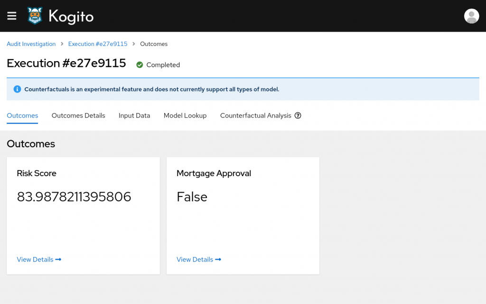
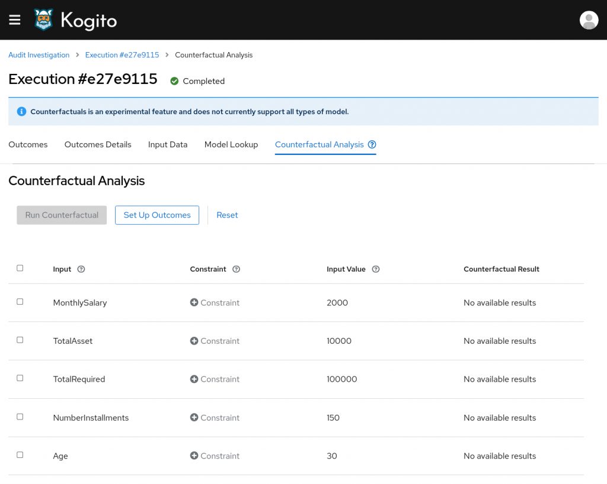
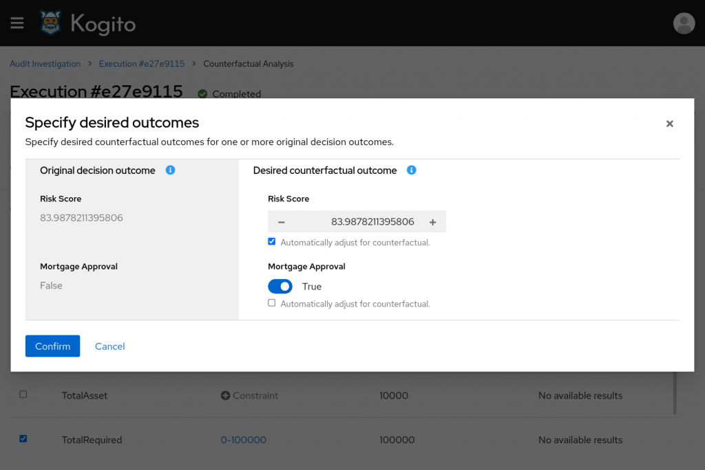
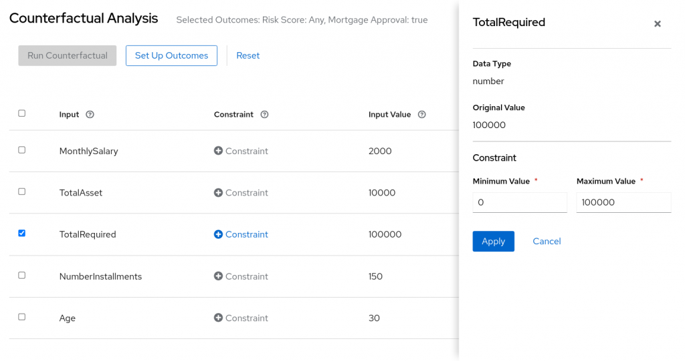
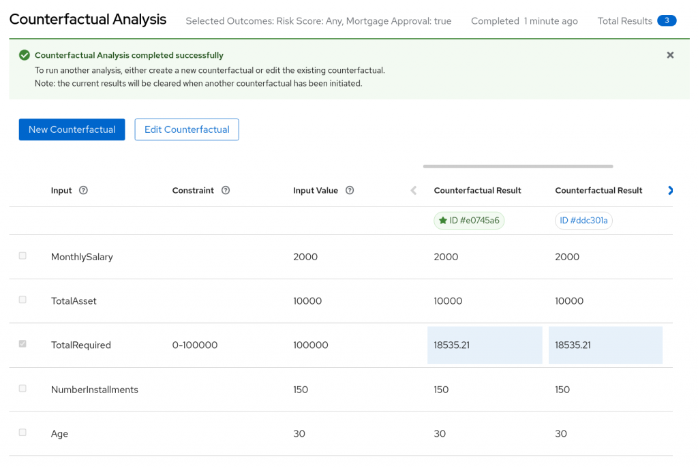

Counterfactuals; getting the right answer
Sometimes the result of an automated decision may be neither desired or that which was required.
What if there was a tool to find a way to overturn those decisions, maybe changing some of the figures that were provided to the system, and achieve a different outcome?
That’s what we’ve been working on lately within the Trusty AI initiative. We added a new experimental feature to the Audit Investigation console called Counterfactual Analysis.
Counterfactuals allow for the outcome of a decision to be set and a range of viable inputs to be searched over until the outcome is achieved.
Let’s see how it works in detail with a practical example.
Getting an approval for a denied loan
We will consider a model responsible to approve or deny mortgage applications. The model produces two outputs, specifically Mortgage Approval (obviously) and a Risk Score associated to the loan request.
We have submitted a request to the model, so we go to the Audit investigation dashboard and we open the execution detail to discover that the mortgage request was denied.

Let’s open the Counterfactual tool using the new tab available in the navigation menu.

At this point we want to specify a different outcome for the decision. To do so, we click on the "Set Up Outcomes" button.
A modal window will open where we can see the original outcomes and we can change them according to our desire.
We’ll set "Mortgage Approval" to True and we’ll check "Automatically adjust for counterfactual" for the Risk score. In this way the analysis will search for any risk score value that produces a Mortgage approval.
Then we’ll click on "Confirm".

Now we have to specify how we would like to alter the inputs in order to achieve the outcomes we’ve just chosen.
In the CF table we see the list of all the inputs provided within the execution and their original value. Clicking on the checkbox at the beginning of an input row will set the input as changeable. Then clicking on its "Constraint" button we will have to set a range of values for the selected input. The system will search for values within the provided range to find solutions matching the desired outcome.
So, we will enable the "TotalRequired" input and we’ll set up a range constraint from 0 to 100,000.
We are basically searching what’s the amount that could be loaned given the provided salary and assets.

At this point we’ve filled out all the required information to run the analysis. We’ve selected at least one outcome different from the original one (Mortgage Approval, from false to true) and we provided at least one searchable input (the requested amount).
Running the analysis
We are all set and we can click on "Run analysis" to start looking for solutions.
The default analysis will run for one minute. At the end of it we can see that the system was able to find some results!

The best solution found is showed at the far left of the results area and it’s marked with a star near its ID.
We can see that the mortgage request could be approved for a "TotalRequired" sum around 18,500.
At this point we could try another run by allowing other inputs to change. By clicking on "Edit Counterfactual" it’s possible to start over keeping the search options already provided. We could eventually try searching with higher values for "TotalAsset" or "MonthlySalary" for example.
That’s it! Our brief introduction to the Counterfactual Analysis ends here. Keep in mind that it is still an experimental feature at the moment. It only supports a limited set of types for the outcomes and the inputs of a decision (only numbers and booleans).
The Counterfactual Analysis tool will be available with the upcoming release of Kogito 1.13. You can learn more about running TrustyAI in the quick start blog post.
Further readings
If you are interested in reading more about how counterfactuals work behind the hood you can explore the following resources:
- Finding Counterfactuals with OptaPlanner
- TrustyAI Explainability Toolkit paper
- (video) Introduction to Counterfactuals and how it helps understanding black-box prediction models